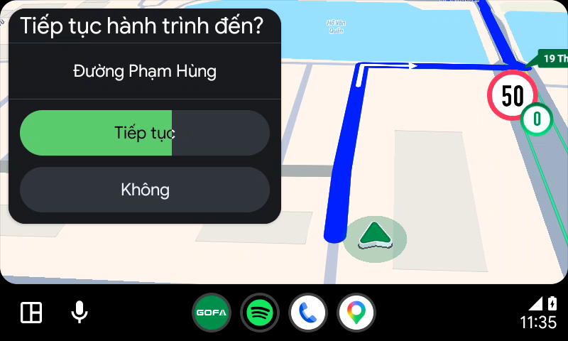
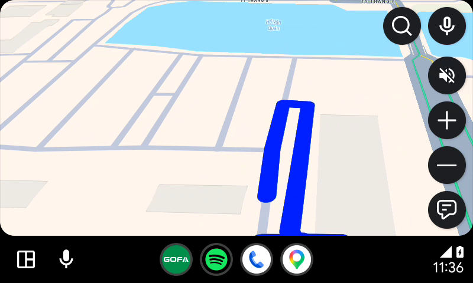
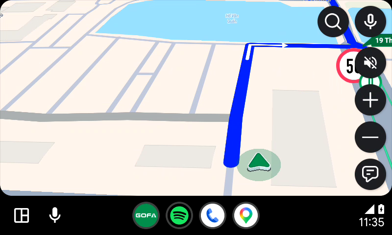
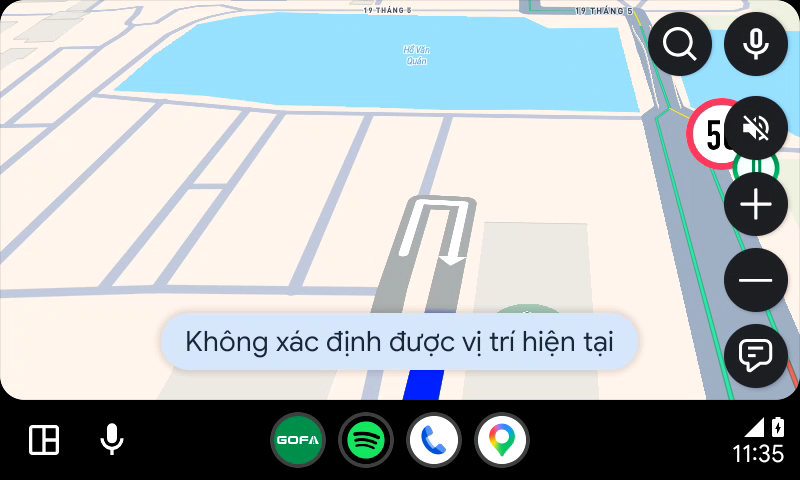
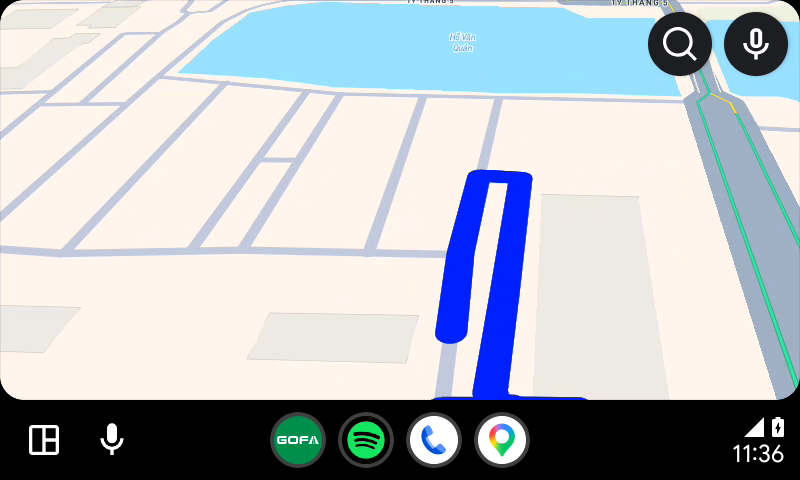

Kiểm thử tự động phát hiện ngắt kết nối dở dang, hiển thị Popup Resume, đếm ngược 8 giây tự động kích hoạt dẫn đường và xử lý các nút bấm trên thiết bị: bffe438f
Đánh giá toàn diện cơ chế tiếp tục hành trình khi kết nối lại xe sau khi bị thoát app đột ngột. Cơ chế đếm lùi 8 giây vận hành chính xác và tự động chuyển chế độ dẫn đường an toàn cho người lái.
| Mã TC | Tên Test Case | Điều kiện tiên quyết | Các bước thực hiện | Kết quả kỳ vọng | Ảnh chụp Android Auto | Kết quả | Ghi chú & Đánh giá |
|---|---|---|---|---|---|---|---|
| AA_Resume_001 | Kiểm tra hiển thị Popup Resume khi ngắt kết nối dở dang | Đang dẫn đường thì app bị tắt hoặc ngắt kết nối, sau đó mở lại | 1. Tạo lộ trình dẫn đường 2. Force-stop app 3. Mở lại app trên xe |
Hiển thị Popup Resume với tiêu đề 'Tiếp tục hành trình đến?', tên điểm đến, nút Tiếp tục (kèm đếm ngược 8s) và nút Không |
Android Auto
 |
PASS | Popup hiển thị nổi bật ở trung tâm màn hình, thông tin đầy đủ rõ ràng. |
| AA_Resume_002 | Kiểm tra hiển thị tiêu đề Popup Resume | Popup Resume đang hiển thị | Quan sát tiêu đề popup | Tiêu đề 'Tiếp tục hành trình đến?' rõ ràng |
Android Auto
|
PASS | Tiêu đề chuẩn thiết kế, dễ đọc từ khoảng cách lái xe. |
| AA_Resume_003 | Kiểm tra hiển thị thông tin điểm đến | Popup Resume đang hiển thị | Quan sát tên điểm đến trên popup | Hiển thị chính xác tên điểm đến trước khi bị ngắt kết nối |
Android Auto
|
PASS | Điểm đến được khôi phục chính xác (Ngõ 341 Đường Trung Văn). |
| AA_Resume_006 | Kiểm tra nút 'Tiếp tục' có đồng hồ đếm ngược 8s | Popup Resume đang hiển thị | Quan sát nút 'Tiếp tục' | Nút hiển thị kèm bộ đếm ngược từ 8 giây về 0 giây |
Android Auto
 |
PASS | Đồng hồ đếm ngược hiển thị rõ ràng bên cạnh nhãn 'Tiếp tục'. |
| AA_Resume_007 | Kiểm tra hiển thị giao diện nền phía sau Popup Resume | Popup Resume đang hiển thị | Quan sát các panel phía sau popup | Không bị đè lấn giao diện hoặc hiển thị panel điều hướng thừa |
Android Auto
|
WARNING | WARNING / UI GLITCH: Bảng chỉ dẫn ngã rẽ trước đó vẫn hiển thị mờ phía dưới popup Resume, nên ẩn hoàn toàn các panel phụ này khi popup hiển thị. |
| AA_Resume_008 | Kiểm tra chọn nút 'Không' trên Popup Resume | Popup Resume đang hiển thị | Nhấn nút 'Không' (25%, 55%) | Đóng popup resume và quay về màn hình bản đồ Home tự do |
Android Auto
 |
PASS | Popup đóng ngay lập tức, hủy bỏ phiên dẫn đường dở dang và đưa về Home an toàn. |
| AA_Resume_009 | Kiểm tra chọn nút 'Tiếp tục' trên Popup Resume | Popup Resume đang hiển thị | Nhấn nút 'Tiếp tục' (25%, 39%) | Chuyển ngay sang màn hình Dẫn đường tiếp tục hành trình |
Android Auto
 |
PASS | Khôi phục lộ trình lập tức và chuyển sang chế độ dẫn đường mượt mà. |
| AA_Resume_010 | Kiểm tra hoạt động đếm ngược 8s tự động | Popup Resume đang hiển thị | Để yên không thao tác trên màn hình | Đồng hồ đếm lùi từng giây từ 8 về 0 |
Android Auto
|
PASS | Bộ đếm lùi hoạt động chính xác theo thời gian thực. |
| AA_Resume_011 | Kiểm tra tự động chuyển sang dẫn đường sau khi hết 8s | Popup Resume đếm ngược hết 8s | Quan sát chuyển đổi màn hình sau 8s | Tự động chuyển vào màn hình Dẫn đường mà không cần thao tác |
Android Auto
 |
PASS | Hết 8s, ứng dụng tự động kích hoạt dẫn đường, tối ưu an toàn khi đang lái xe. |